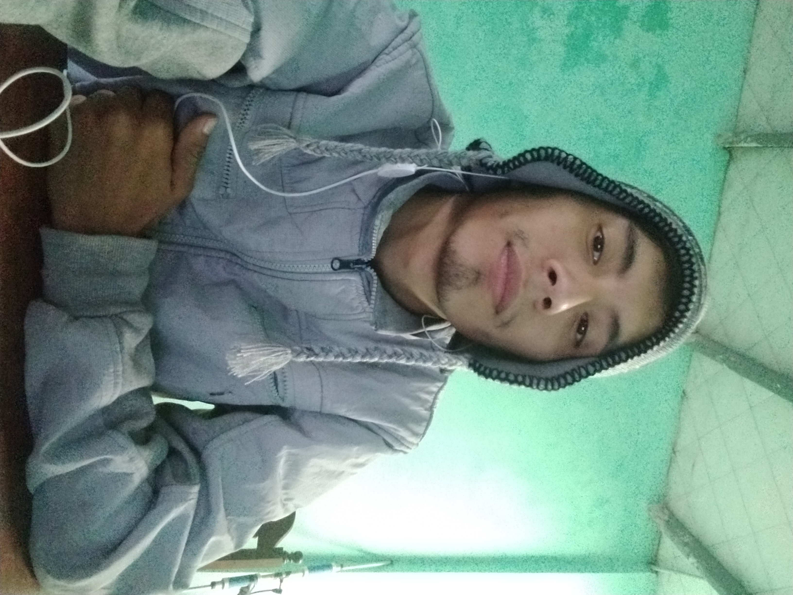

Técnico en PC-Atención al publico
Me recibí de técnico en soporte e infraestructura de la información en el 2021 en el Instituto Balcarce, adquiriendo conocimientos en arreglo de pc (a lo que me dedico actualmente), Manejo de redes, Seguridad informática, Manejo de Word, Exel y programas de edición. Con amplia experiencia en ventas, espero y si me dan la oportunidad conseguir mucha más experiencia trabajando con ustedes.
Soy creativo, trabajador, me gusta aprender, nivel de inglés es intermedio, me gusta la psicología y filosofía, leer, el futbol, entre muchas cosas más.
Educacion
Construcciones |”EET N°1” 2012-2015 Incompleto
Perito Mercantil |”CENS N°203” 2016-2017 Completo
Tecnicatura Superior en Soporte de Infraestructura de tecnología de la información |”
Instituto Balcarce” 2018-2021 Completo
Experiencia laboral
Local de feria |mozo 2014, fui ayudante de cocina y encargado de la atención al
público.
NATURE |2019-2020 Fui revendedor únicamente de perfumes en una microempresa que me capacito para vender en la vía pública de la manera más eficiente.

¿Porque estudio esta carrera?
Estoy interesado en el mundo de la programacion y lo que es la ciberseguridad, curse una carrera donde aprendi a programar en PHP y otras areas referidas a la informatica, pero por temas de la cuerentena y problemas familiares no pude prestarle la atencion que debia, por lo que me quiero capasitar de manera mas completa aprovechando las capacitaciones que brinda Henry, espero llegar a concretar varios proyectos luego de lo aprendido..
Gracias!